| Nombre | Posición | Edad | Bibliografía | Portada |
|---|---|---|---|---|
| Magomed Ozdoev | Mediocampista | 32 | Mediocampista defensivo del Torino FC, destaca por su recuperación y solidez en el medio campo. |
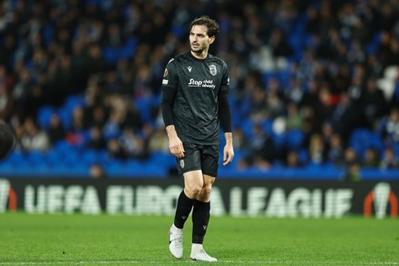 |
| Andrey Mostovoi | Mediocampista/Extremo | 28 | Jugador del Zenit San Petersburgo, rápido y habilidoso, capaz de crear ocasiones desde la banda. |
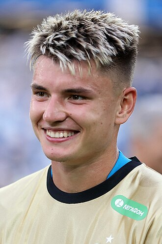 |
| Igor Diveev | Defensa central | 26 | Defensor del CSKA Moscú, sólido en la marca y en el juego aéreo, joven promesa de Rusia. |
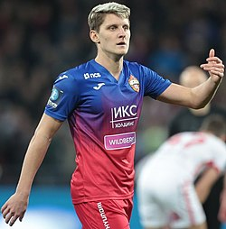 |
| Vladimir Granat | Defensa | 38 | Veterano defensor del Rubin Kazán, experimentado y líder en la zaga rusa. |
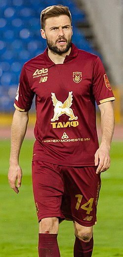 |
| Daler Kuzyaev | Mediocampista | 32 | Mediocampista del Zenit San Petersburgo, aporta equilibrio entre defensa y ataque. |
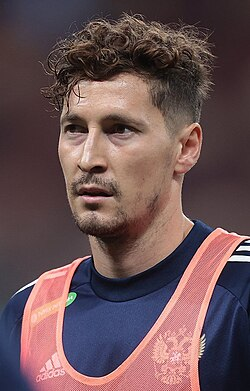 |
| Aleksandr Sobolev | Delantero | 28 | Delantero del Spartak Moscú, reconocido por su capacidad goleadora y movilidad en el área rival. |
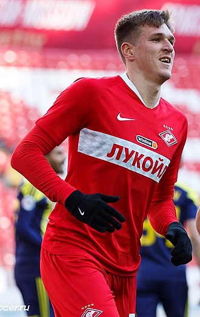 |
| Roman Zobnin | Mediocampista | 31 | Mediocampista del Spartak Moscú, excelente en recuperación y distribución del balón. |
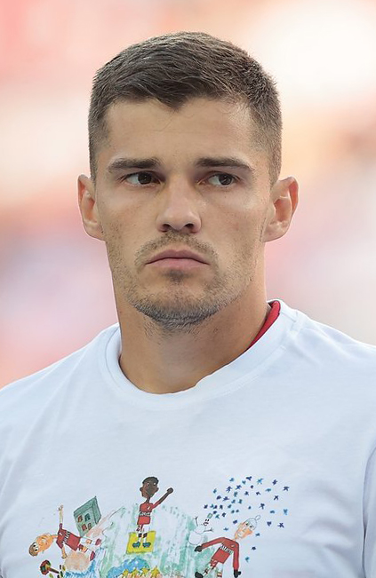 |
| Artem Dzyuba | Delantero | 37 | Delantero del Zenit San Petersburgo, experimentado, conocido por su fuerza física y remate potente. |
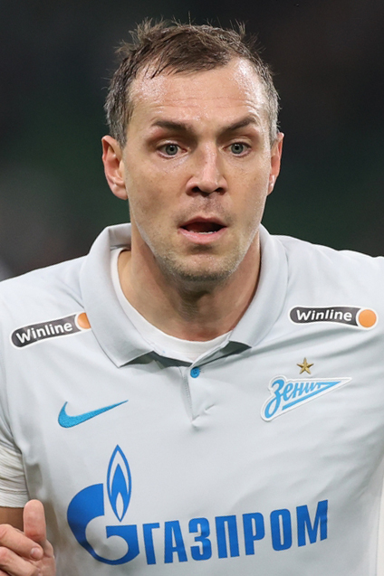 |
| Aleksandr Golovin | Mediocampista ofensivo | 29 | Mediocampista del AS Mónaco, creativo y versátil, con gran visión y pase largo. |
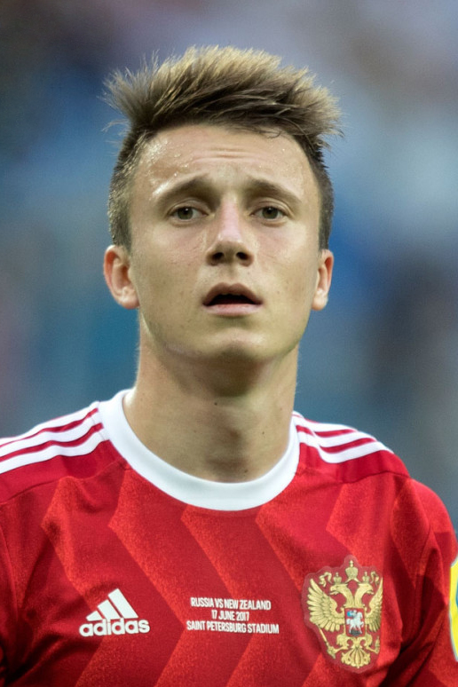 |
| Fyodor Smolov | Delantero | 35 | Delantero del Lokomotiv Moscú, rápido y goleador, especialista en definiciones dentro del área. |
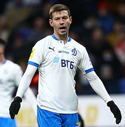 |
| Mario Fernandes | Lateral derecho | 35 | Lateral del Zenit San Petersburgo, sólido defensivamente y con proyección ofensiva por la banda derecha. |
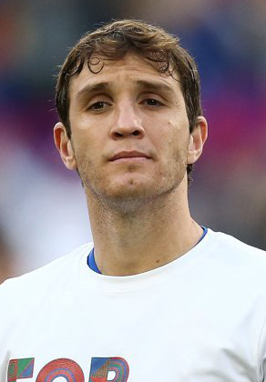 |
| Igor Akinfeev | Portero | 39 | Arquero del CSKA Moscú, veterano con reflejos excepcionales y gran liderazgo bajo los tres palos. |
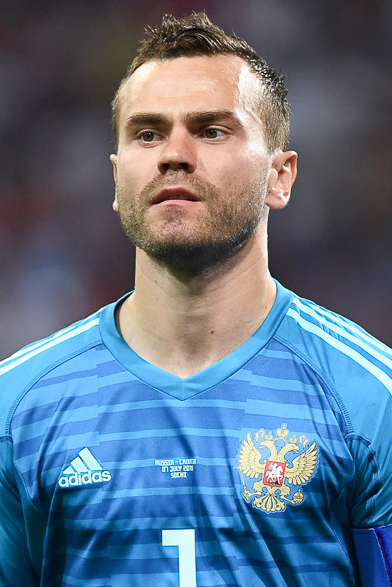 |